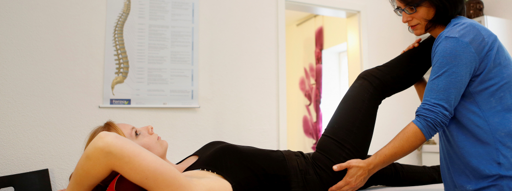
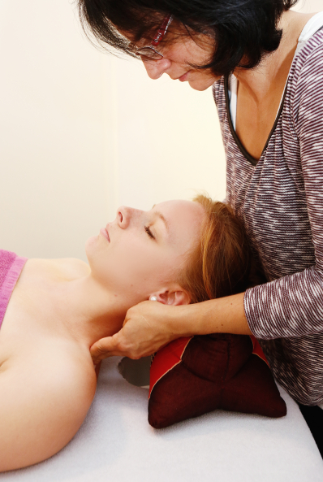
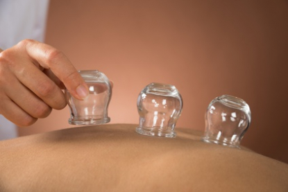

Therapien
Übersicht der Therapieformen in meiner Naturheilpraxis.


Klassische manuelle Therapien
Bedingt durch den Arbeitsalltag, leiden inzwischen immer mehr Menschen unter „Rücken“, aber auch Schulter-, Knie- und Hüftprobleme nehmen zu.
Es kann aber auch durch den sogenannten Ausgleichssport oder die Bewegung in der Freizeit zu Überbelastung kommen, was zu den gleichen Symptomen führt.
Nicht zuletzt ist noch die Gruppe der durch z.B. degenerative Erkrankung oder Altersverschleiß betroffenen Personen zu berücksichtigen. Überall hier sind klassische manuelle Therapien eine Möglichkeit, ohne Einsatz von Medikamenten eine Entlastung zu unterstützen.
Alle Manuelle Therapien ansehen
Infusionstherapien
Abgeleitet vom lateinischen infundere: hineingießen wird mit Infusionstherapie eine kontinuierliche Verabreichung von Flüssigkeit direkt in die Blutbahn zu medizinischen Zwecken bezeichnet. Je nach Ursache zur Infusion bzw. medizinischem Zweck wird die Flüssigkeit mit Medikamenten, Makro- oder Mikronährstoffen angereichert. Auch ein Ausgleich des Flüssigkeitshaushaltes kann durch Infusion erreicht werden.
In der Regel erfolgt die Infusion intravenös, das heißt über Venen an den Gliedmaßen, z.B. Handrücken oder Ellenbogenbeuge. Die Infusiontherapie kann je nach Indikation langfristig oder kurzfristig angelegt sein.
Alle Infusionstherapien ansehen

Faszien-Therapie
Seit einigen Jahren hat sich die Wissenschaft intensiv mit den Faszien beschäftigt. Faszien sind bindegewebige Umhüllungen von Muskeln und sorgen für geschmeidige Beweglichkeit. Sind die Faszien verhärtet, stellen sich Verkrampfungen ein, welche durch gezielte Behandlungen auflösbar sind. Neben Rolfing stellt auch die ISBT Bowen Therapie eine dieser sehr erfolgreichen Formen dar und wird von mir in meiner Praxis im Rahmen eines gesamtheitlichen Konzeptes angeboten.
Alle ISBT Bowen Therapie ansehen
Schmerztherapien
Neben der herkömmlichen Methodik, Schmerzen mittels Medikamente zu behandeln, gibt es noch den Bereich der alternativen Schmerztherapie. Besonders chronische Schmerzpatienten scheuen die Nebenwirkungen einer Dauermedikation und suchen für sich andere Wege, um mit beispielsweise Migräne, Bewegungsschmerzen oder Rückenproblemen umzugehen.

Schröpftherapie
Die Behandlung mittels Schröpfgläsern ist schon seit 3500 Jahren aus dem alten Mesopotamien bekannt. In Griechenland galten Schröpfgläser aufgrund ihrer hohen Wirkung als Symbole für die ärztliche Heilkunst. Heute wird in der Naturheilkunde das Schröpfen nach wie vor gerne praktiziert.
Beim Schröpfen werden mit Hilfe von Saugglocken durch Unterdruck bestimmte Areale des Körpers zur Selbstheilung angeregt. Zum einen können sich Blockaden direkt lösen, zum anderen kann durch die Stimmulation an Akupunktur-Punkten auf dem Rücken ein Reiz ausgelöst werden, durch den das Chi (chin: Lebensenergie) wieder fließen kann.
Eine weitere, milde Form des Schröpfens stellt die Schröpfmassage dar. Hier werden Schröpfgläser zur kräftigen Massage genutzt, welche durch den Unterdruck auch tiefe Muskelschichten erreichen und lockern kann.
Passt eine dieser Behandlungen zu Ihnen?
Das klären wir am besten im Gespräch. Der erste Termin dauert eine Stunde.
- Praxis
- Uerdingerstr. 573
47800 Krefeld - Telefon
- 0173/8626293